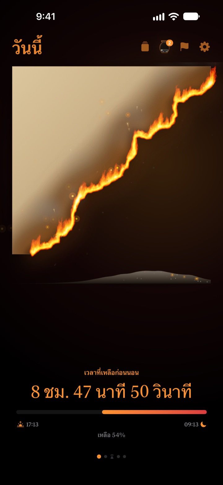
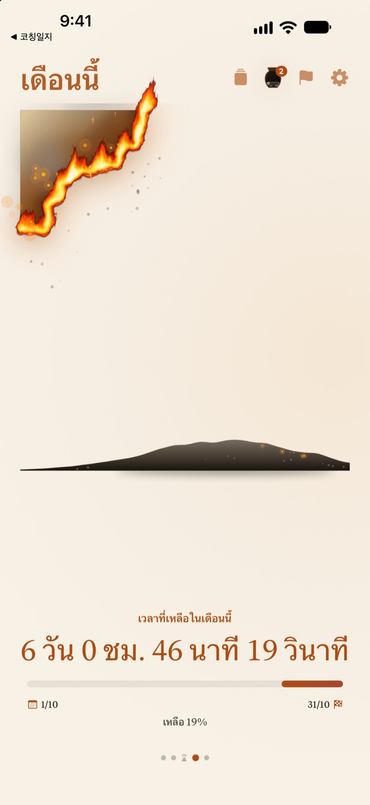
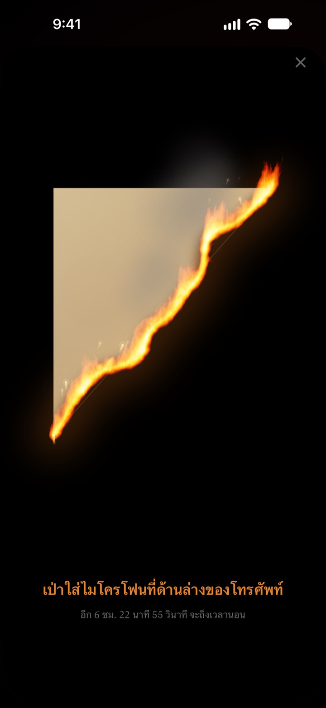
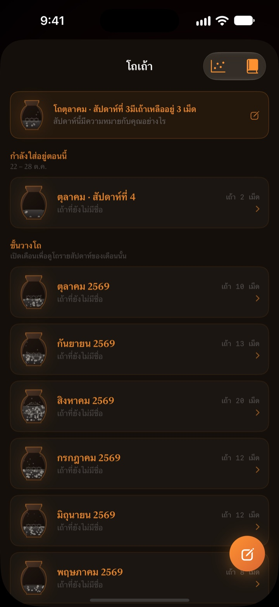

เวลาที่เหลือของวันนี้
กำลังลุกไหม้ตรงหน้า
ค่ำคืนที่ดูไม่มีอะไรเมื่อเป็นตัวเลข จะรู้สึกต่างไปเมื่อเห็นเป็นกระดาษหนังที่ลุกไหม้ ก่อนนอน 30 นาที เป่าที่หน้าจอให้ไฟดับแล้วปิดวันนี้
กระดาษหนังลุกไหม้ การเป่าไฟ และการทบทวน ใช้ได้ฟรีทั้งหมด

ลองเป่าให้ดับ
เลื่อนเวลาไปใกล้เวลานอน แล้วกดปุ่มค้างไว้ หรือเป่าใส่ไมโครโฟน
เคยเงยหน้าขึ้นมาแล้วตกใจว่า "เที่ยงคืนแล้วเหรอ" ไหม
กินข้าวเย็น นั่งพักแป๊บเดียว วันก็หมดไปแล้ว ตัวเลขบนนาฬิกาดูเหมือนเดิมทุกคืน เลยไม่รู้สึกว่าเวลากำลังลดลง กระดาษหนังลุกไหม้แสดงเวลาที่เหลือเป็นกระดาษหนังที่กำลังไหม้ ให้คุณรู้ตัวก่อนที่ค่ำคืนจะหายไป
วัน สัปดาห์ และปี ค่อยๆ มอดไหม้
ตั้งแต่ตื่นนอนจนถึงเวลานอน กระดาษหนังจะค่อยๆ ไหม้ไป ดูเวลาที่เหลือของสัปดาห์นี้ เดือนนี้ และปีนี้ได้แบบเดียวกัน
เพิ่มเป้าหมายที่มีวันที่เป็นกำหนดส่ง แล้วการนับถอยหลังจะเดินไปพร้อมกัน

เป่าไฟปิดวัน
ตั้งแต่ 30 นาทีก่อนนอน เป่าที่กระดาษหนังที่ลุกไหม้ให้ไฟดับ ใช้แค่แรงลมหายใจ ไม่มีการบันทึกเสียง
เศษที่เหลือจะถูกเก็บไว้ พลิกด้านหลังแล้วเขียนถึงวันนี้สักบรรทัดได้

เวลาที่ผ่านไปกลายเป็นเถ้า
ทบทวนวันนี้ด้วยข้อความสั้นๆ หนึ่งบรรทัด แล้ววางเป็นจุดบนกราฟสองแกนตามที่ใช้เวลานั้นไป บันทึกทบทวนจะสะสมในโถเถ้ารายสัปดาห์และรายเดือน และกลับมาอ่านได้ในสมุดบันทึกทบทวน
กระแสของเถ้าแสดงให้เห็นว่าเวลาหายไปไหน ด้วยกราฟการกระจายและปฏิทินถ่านไฟ

เริ่มได้ใน 3 ขั้นตอน
- 1
ตั้งเวลาตื่นและเวลานอน
แตะรูปเฟืองมุมขวาบน กระดาษหนังจะเริ่มไหม้และดับตามเวลานี้
- 2
เลือกช่วงเวลา
ปัดสลับระหว่างวัน สัปดาห์ เดือน และปี หรือซ่อนหน้าที่ไม่ใช้ในการตั้งค่า
- 3
เพิ่มวิดเจ็ต
วางบนหน้าจอโฮมหรือหน้าจอล็อก ก็เห็นเวลาที่เหลือได้โดยไม่ต้องเปิดแอป
ดูเวลาที่เหลือได้ที่ไหนบ้าง
- วัน
- ตั้งแต่ตื่นนอนจนถึงเวลานอน
- สัปดาห์ · เดือน · ปี
- เวลาที่เหลือของสัปดาห์นี้ เดือนนี้ และปีนี้
- เวลาว่าง
- กระดาษหนังของสัปดาห์จะไหม้เฉพาะช่วงเวลาที่คุณกันไว้ให้ตัวเอง (Pro)
- กำหนดส่ง
- เวลาที่เหลือจนถึงวันของเป้าหมาย ใช้ฟรีได้ 1 รายการ
- วิดเจ็ตหน้าจอโฮม
- กระดาษหนังรายวันมีขนาดเล็ก กลาง และใหญ่ ส่วนสัปดาห์ เดือน ปี และกำหนดส่งมีขนาดเล็กและกลาง
- วิดเจ็ตหน้าจอล็อก
- แบบวงกลม สี่เหลี่ยม และแบบบรรทัดเดียว
- Dynamic Island · กิจกรรมสด
- ตั้งแต่ 1 ชั่วโมงก่อนนอน หรือทั้งวัน เลือกหรือปิดได้ในการตั้งค่า
ขยาย Dynamic Island เพื่อดูกระดาษหนังที่ลุกไหม้พร้อมการนับถอยหลังแบบเต็ม
กระดาษหนังใช้ฟรี อยากเก็บได้มากขึ้นก็มี Pro
ฟรี
- กระดาษหนังรายวัน สัปดาห์ เดือน และปี
- เป่าไฟให้ดับและเก็บเศษกระดาษ
- บันทึกทบทวนบรรทัดเดียว โถเถ้า และสมุดบันทึกทบทวน
- เช็กอินตอนเช้า เชื่อมข้อมูลการนอนจากแอปสุขภาพได้
- วิดเจ็ตหน้าจอโฮมและหน้าจอล็อก และ Dynamic Island
- กำหนดส่ง 1 รายการ
กระดาษหนังลุกไหม้ Pro
- เผาเฉพาะเวลาว่างของคุณเอง
- ธีม: ฮันจิใต้แสงจันทร์ เซลาดอน ยามพลบค่ำ
- เปลวไฟ: ไฟป่าทุ่ง ถ่านไฟ ประทัดดอกไม้ไฟ
- แชร์เศษที่เก็บไว้เป็นการ์ดและโปสเตอร์
- ส่งออกสมุดบันทึกทบทวนเป็น PDF
- กระแสของเถ้าย้อนหลัง 12 เดือน
- กำหนดส่งได้ไม่จำกัด
ไม่ใช่การสมัครสมาชิก ซื้อครั้งเดียวใช้ได้ตลอด รวมฟีเจอร์ Pro ที่จะเพิ่มในอนาคตทั้งหมด
เปลี่ยนเครื่องใหม่ แตะ กู้คืนการซื้อ ในการตั้งค่าได้เลย
คำถามที่พบบ่อย
เวลาในวิดเจ็ตไม่ตรงกับในแอป
iOS ไม่ได้วาดวิดเจ็ตหน้าจอโฮมใหม่ทุกวินาที เปิดแอปแล้ววิดเจ็ตจะตรงกันทันที ถ้าอยากเห็นการนับถอยหลังทีละวินาที ให้ดูที่ Dynamic Island และกิจกรรมสดบนหน้าจอล็อก
เป่าแล้วไฟไม่ดับ
เป่าไฟได้ตั้งแต่ 30 นาทีก่อนนอนเท่านั้น ตรวจสอบว่าอนุญาตให้ใช้ไมโครโฟนแล้ว จากนั้นเป่าต่อเนื่องราว 1 วินาทีใกล้ไมโครโฟนด้านล่างของ iPhone เสียงสั้นๆ ครั้งเดียวจะไม่ทำให้ไฟดับ
แอปบันทึกเสียงของฉันไหม
ไม่ แอปดูแค่แรงลมที่เป่า ไม่บันทึกหรือเก็บเสียงใดๆ
ระหว่างนอนหลับ แอปแสดงอะไร
พอเลยเวลานอน จะมีหัวใจลุกไฟปรากฏขึ้น บอกว่าการนอนผ่านไปถึงไหนแล้วจนถึงเวลาตื่น เช้าวันถัดไปแอปจะถามว่าเมื่อคืนนอนตรงเวลาไหม ถ้านอนดึก กระดาษหนังของเช้านี้จะไหม้เกรียมไปตามนั้น ถ้าเชื่อมแอปสุขภาพ แอปจะใช้เวลาที่หลับตามที่บันทึกไว้โดยไม่ต้องถาม
การแจ้งเตือนมาเมื่อไร
1 ชั่วโมงก่อนเวลานอน ถ้าไม่ได้รับ ให้ตรวจที่ การตั้งค่า > การแจ้งเตือน > กระดาษหนังลุกไหม้
กินแบตเตอรี่มากไหม
การนับถอยหลังในแอปเปลี่ยนทุกวินาที แต่วิดเจ็ตอัปเดตแบบประหยัดพลังงานที่ iOS จัดการให้ จึงกระทบแบตเตอรี่น้อยมาก
ข้อมูลของฉันเก็บไว้ที่ไหน
เวลาตื่น เวลานอน กำหนดส่ง บันทึกทบทวน และโถเถ้า เก็บไว้ในเครื่องของคุณเท่านั้น นักพัฒนาได้รับแค่สถิติการใช้งานแบบไม่ระบุตัวตน ข้อมูลวินิจฉัยเมื่อแอปขัดข้อง และความคิดเห็นที่คุณส่งมาเอง ไม่มีโฆษณาและไม่มีการติดตาม
Pro เป็นแบบสมัครสมาชิกไหม
ไม่ใช่ จ่ายครั้งเดียวใช้ได้ตลอด ถ้าเปลี่ยนเครื่อง แตะ กู้คืนการซื้อ ในการตั้งค่า
แจ้งปัญหา เสนอฟีเจอร์ หรือสอบถามอื่นๆ ส่งอีเมลมาที่ leeo@kakao.com